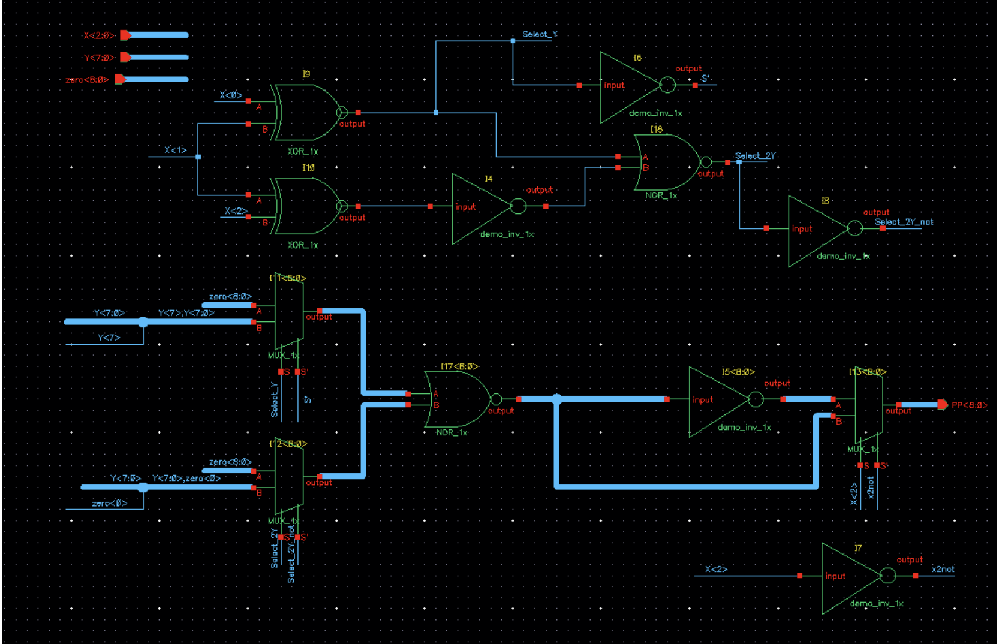
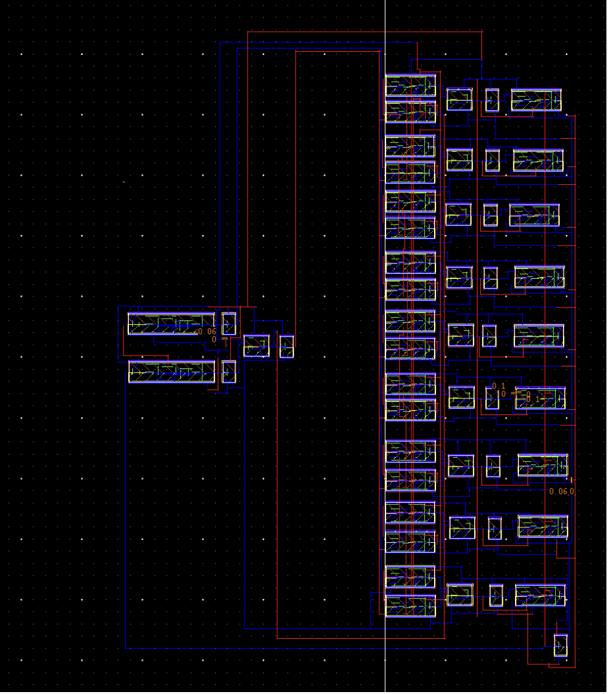
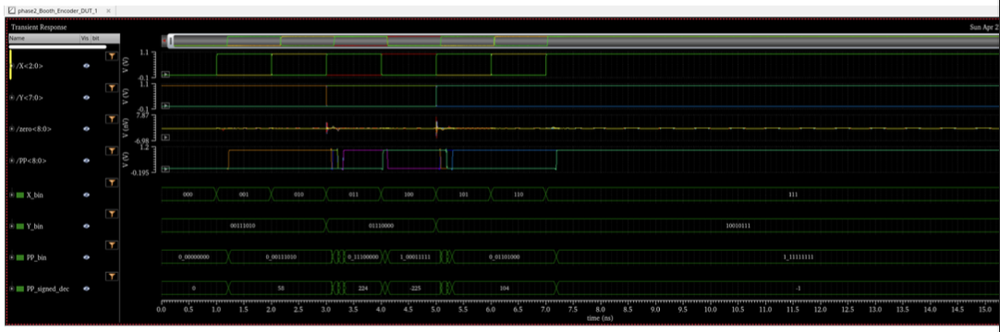
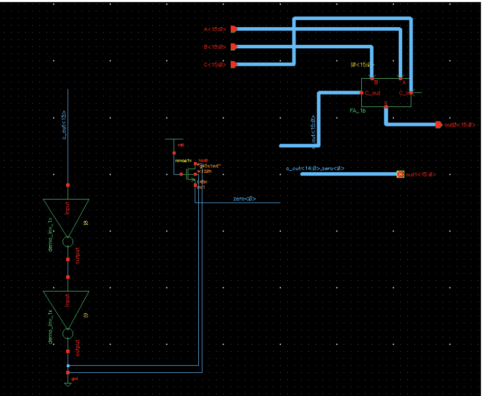
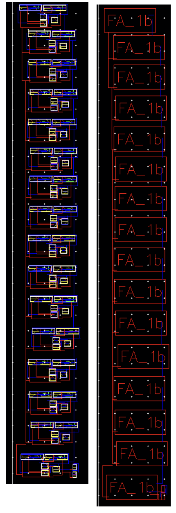
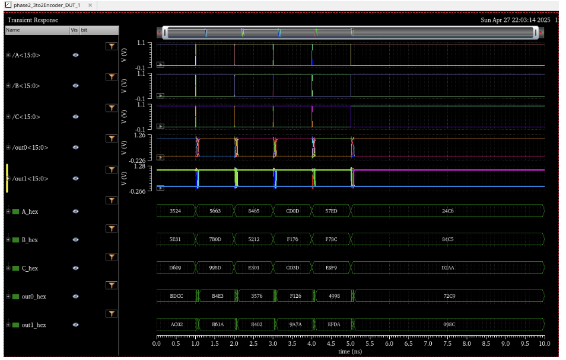
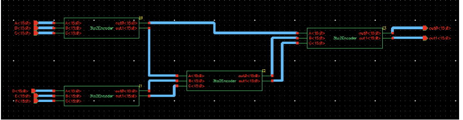
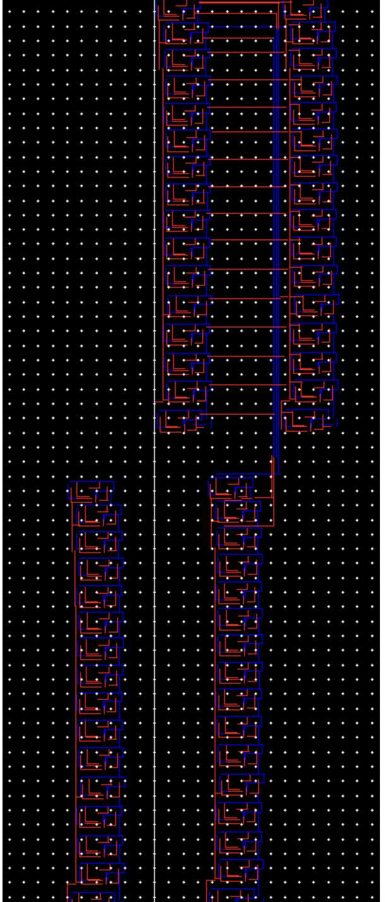
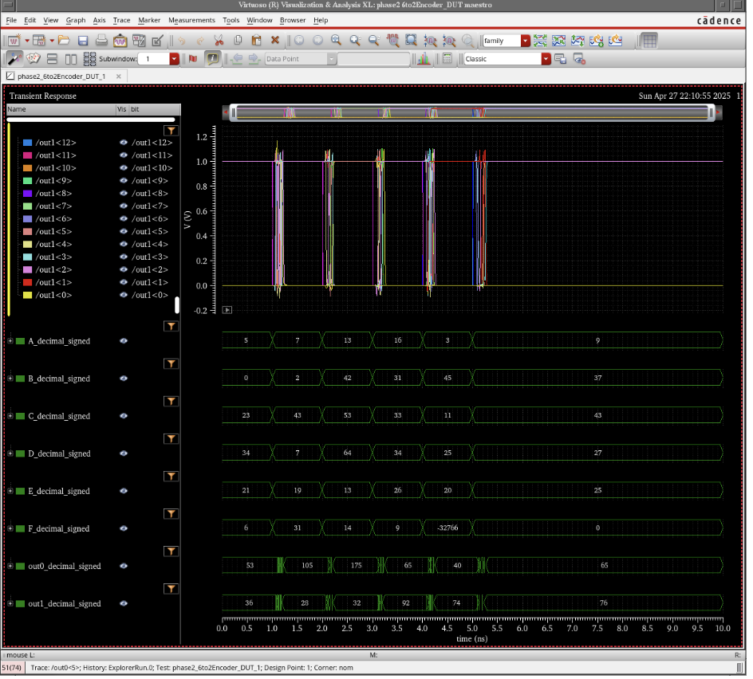

Radix-4 Booth Encoder
- Encodes X<2:0> into a signed partial product PP<8:0> of Y<7:0>, generating {0, ±Y, ±2Y}. Implemented with XOR, NOR, MUX, and inverter primitives.
- DRC: 0 errors (1335 geometries, 562 rules). LVS: MATCH. Post-extraction blocked by apostrophe characters in wire names inside XOR/MUX subcells.

Booth Encoder Schematic
X<2:0>, Y<7:0>, zero<8:0> → PP<8:0>; XOR/NOR/MUX selection logic

Booth Encoder Layout
DRC: 0 errors; LVS: MATCH

Booth Encoder — Pre-extraction Functionality
Signed decimal annotations on X, Y, PP confirm ±Y and ±2Y encoding across all 8 X values
3:2 Compressor
- Reduces three 16-bit inputs A, B, C to two outputs out0 + out1 using 16 FA_1b instances. DRC: 0 errors. LVS: MATCH. Post-extraction blocked by same apostrophe issue.

3:2 Compressor Schematic
A, B, C<15:0> → out0, out1<15:0> via 16× FA_1b + bias circuit

3:2 Compressor Layout
Stacked column of 16 FA_1b cells; DRC: 0 errors (656 geometries)

3:2 Compressor — Pre-extraction Functionality
A, B, C, out0, out1 hex values; out0 + out1 = A + B + C confirmed for all 6 test vectors
6:2 Compressor
- Cascades three 3:2 Encoder instances to reduce six 16-bit inputs A–F to two outputs. Pre-extraction simulation confirmed correct signed decimal sums for all 6 test vectors.

6:2 Compressor Schematic
Three cascaded 3:2 Encoders; A–F<15:0> → out0, out1<15:0>

6:2 Compressor Layout
Two parallel columns of stacked FA_1b cells across three compressor stages

6:2 Compressor — Pre-extraction Functionality
A–F and out0/out1 decimal_signed; sum verified correct across all 6 test vectors
Extraction note: Apostrophe characters in wire names inside XOR and MUX subcells prevented Virtuoso from regenerating the extraction config file for the Booth Encoder and 3:2 Compressor. Pre-extraction results are reported for those blocks.